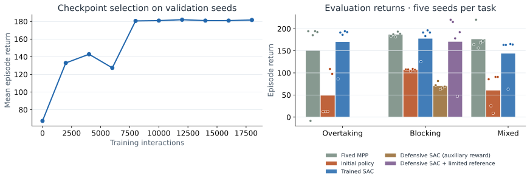
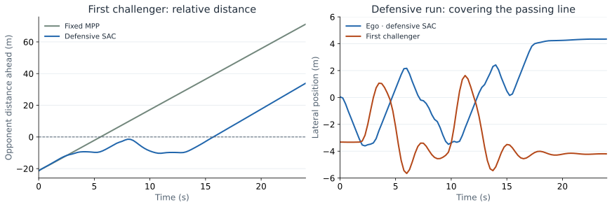

01
Observe
22 values describe curvature, ego motion, and three opponents.
Autonomous racing · Hierarchical reinforcement learning
A recreated hierarchical racing policy: reinforcement learning selects speed and lateral references; nonlinear model predictive control turns them into a drive.
A transparent interface between strategic decisions, physical dynamics, and the trajectory you see on screen.
01
22 values describe curvature, ego motion, and three opponents.
02
SAC chooses desired speed and lateral position. HILEPP-II can also choose two cost weights.
03
vehicle_gym expands the reference and solves a nonlinear constrained problem.
04
Apply the first control for 0.25 s, measure the new state, and repeat.
Inspect the latest MPC solve: the blue ego plan and orange obstacle assumptions update every 0.25 s. Solid cars show the recorded simulation. Playback starts paused and stops at the end.
Actual speed
—Requested speed
—Current position
—Latest MPC solve
—The blue path is the ego’s current 3-second plan. Only its first 0.25-second control is applied. At the next control step, the planner observes every car and solves again. A translucent blue car marks the selected future time in this current plan; it is not a forecast being scored against later ego motion.
The orange paths are the other vehicles’ trajectories supplied to the obstacle constraints in that same solve. Leaders and alongside cars retain their measured speed and heading error. A car fully behind the ego is assumed to brake to a stop, following the role distinction in Section IV-B.3 of the paper. This is a feasibility assumption about yielding, not a prediction of intent.
Choose “Hold an opponent assumption for 3 s.” Its orange ghost and the corresponding solid opponent then show the same timestamp. The ghost follows the assumption recorded at the start of that window. Separation shows how the actual opponent departed from that assumption. A braking follower normally diverges because it does not actually have to brake. This diagnostic never freezes the controller: MPC continues to replan every 0.25 s.
Click an event to pause one second before it. A measured defensive move requires more than 0.8 m of ego lateral motion toward an approaching challenger’s line over two seconds, while that challenger is held below its target speed. These event counts are diagnostics.
Blue: actual speed. Dashed gray: reference supplied to MPC.
Blue: actual position. Dashed gray: reference supplied to MPC. Purple, when present: the neural policy’s original request before the 1 m limit.
Each curve is an opponent’s distance ahead of the ego, using its car color. Crossing zero changes center order; a pass event requires a full car length of clearance.
Selected opponent’s actual speed versus its free-running target. The event summary counts time spent slowed behind the ego; general speed loss alone does not establish blocking.
Research contribution · ECC 2023
The policy chooses strategy through reference parameters, while the motion planner retains the vehicle model and constraints. HILEPP-I outputs desired speed and lateral position. HILEPP-II additionally sets the speed and lateral cost weights. Both interfaces are implemented; the included trained checkpoint uses HILEPP-I.
One training seed · three tasks · five test seeds per task
The general SAC policy achieved a mean held-out return of 163.8, compared with 171.5 for the fixed-reference planner (-4.5%). These are small-scale results from this implementation, not the paper’s reported benchmark.

The fixed planner requests 32 m/s at track center, equal to the learned policy’s speed limit. Each method uses the same five held-out seeds (10000–10004) for each of three tasks: 45 general-comparison episodes. The replay always shows seed 10000. Dots show individual test episodes; bars show means. Validation uses three separate seeds (8000–8002). The best validation checkpoint was selected before test evaluation. A separately trained defensive SAC specialist adds five blocking-only tests. Its auxiliary training reward encourages lane coverage and actually slowing challengers; these test returns use the unmodified progress/rank reward. It is not pooled into the general-policy result or claimed as the paper’s training recipe. Five further diagnostic runs use the same defensive actor with a 1 m lateral-reference limit chosen after inspecting failures. These repeats are not untouched held-out tests.
| Task | Method | Return · mean ± sample SD | Final rank ↓ | Completed | Solver failures | Collisions |
|---|---|---|---|---|---|---|
| Overtaking | Fixed MPP | 151.5 ± 89.6 | 1.6 | 4 / 5 | 1 | 0 |
| Overtaking | Initial policy | 48.7 ± 49.9 | 3.2 | 5 / 5 | 0 | 0 |
| Overtaking | Trained SAC | 170.1 ± 46.9 | 1.0 | 4 / 5 | 1 | 0 |
| Blocking | Fixed MPP | 186.7 ± 4.7 | 3.0 | 5 / 5 | 0 | 0 |
| Blocking | Initial policy | 107.1 ± 1.9 | 4.0 | 5 / 5 | 0 | 0 |
| Blocking | Trained SAC | 177.6 ± 29.4 | 3.0 | 4 / 5 | 1 | 0 |
| Blocking | Defensive SAC (auxiliary reward) | 70.2 ± 7.3 | 1.0 | 0 / 5 | 5 | 0 |
| Blocking | Defensive SAC + limited reference | 170.5 ± 71.2 | 2.4 | 3 / 5 | 2 | 0 |
| Mixed | Fixed MPP | 176.3 ± 25.3 | 2.0 | 5 / 5 | 0 | 0 |
| Mixed | Initial policy | 60.3 ± 40.0 | 3.4 | 4 / 5 | 1 | 0 |
| Mixed | Trained SAC | 143.8 ± 45.2 | 2.0 | 4 / 5 | 1 | 0 |

Seed 10000 is shown for both controllers. Defensive SAC uses the limited-reference diagnostic when available. This limit was introduced after inspecting failed runs; it is not an untouched test comparison. Positive distance means the challenger’s center is ahead. Pass events additionally require 4.6 m of clearance. The right panel shows actual motion, not reference commands. Opponents react to the ego, so their realized trajectories differ between controllers. Curves end if an episode fails.
| Blocking controller | Defensive moves | Held-up vehicle-seconds | Opponent passes |
|---|---|---|---|
| Fixed MPP | 0.0 | 0.1 | 2.0 |
| Initial policy | 0.0 | 0.5 | 3.0 |
| Trained SAC | 0.0 | 0.8 | 1.8 |
| Defensive SAC (auxiliary reward) | 0.8 | 1.9 | 0.0 |
| Defensive SAC + limited reference | 2.0 | 3.0 | 1.4 |
Mean counts and durations per episode. Held-up vehicle-seconds sum over challengers: more than one can be slowed at once. Read these alongside completion and failures; an early failure is not successful defense.
Completion, solver failures, and collisions are reported for every method above. This finite evaluation does not establish safety. A rejected optimizer solution ends the episode before its control is applied. Return combines forward progress and the number of opponents behind the ego.
Use the included new checkpoint, retrain SAC, or connect your own normalized policy to the planner.
# Put the improved vehicle_gym checkout beside this repository
python3 -m venv .venv
source .venv/bin/activate
pip install -e ../vehicle_gym -e '.[train,dev]'
python -m hilepp.evaluate --checkpoint-dir checkpoints --defense-dir checkpoints/defense --defense-reference-limit 1.0
python -m hilepp.train --steps 18000 --seed 7 --output checkpoints/new-run
python -m http.server 8000 --directory docsPython 3.9 · NumPy 1.26.4 · SciPy 1.13.1 · CasADi 3.8.1 / IPOPT · PyTorch 2.8.0 on CPU. The planner uses 12 intervals of 0.25 s, a five-state Frenet model, RK4 integration, and three opponents. Simulation uses five substeps per interval. Full settings, checkpoint provenance, and limitations are documented in the repository.
Python source, regression tests, recorded evaluations, editable web visualization, a scientific figure generator, citation metadata, and GitHub Pages deployment. The HILEPP wrapper depends on the improved vehicle_gym package instead of duplicating its dynamics or planner.